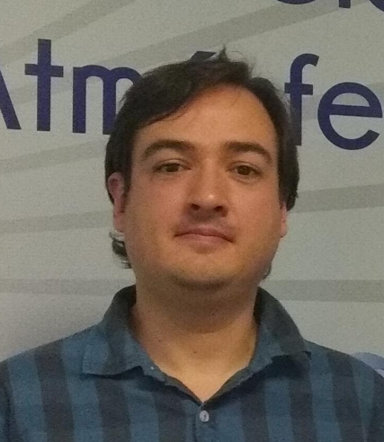

Alejandro Jaramillo
Associate Research Scientist
Centro de Ciencias de la Atmósfera
Universidad Nacional Autónoma de México
Publications
Columbia Initiative on Extreme Weather and Climate
Book: Storm Surge: Hurricane Sandy, Our Warming Planet, and the Extreme Weather of the Past and Future, Harper Wave, 2014.
Podcast: Deep Convection
Research Interests
Atmospheric and climate dynamics,
tropical meteorology, extreme weather and climate, climate risk.
Courses (Spring 2021)
Climate Thermodynamics and Energy Transfer (EESC 4040)
Seminar on Race, Climate Change, and Environmental Justice (EESC G9810)
Columbia links:
GISS
IRI
OCP Seminar, 11 AM Fridays, Comer Seminar Room.
Lamont Events Calendar (includes various colloquia)
GISS Seminars